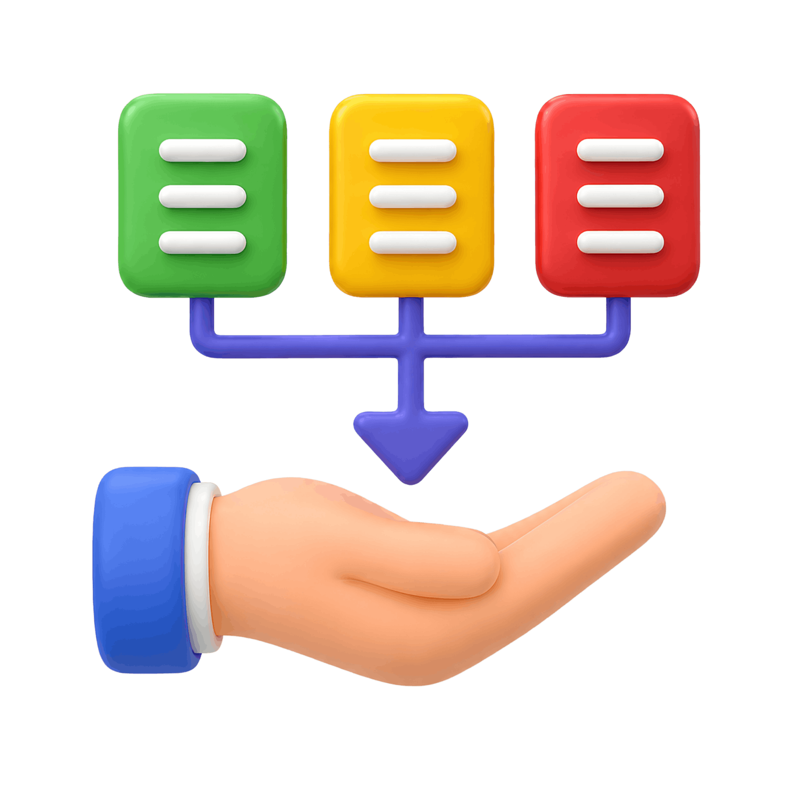

مراجعة الأدبيات
Revue de littérature — كيف تبحث، تنظّم، وتوثّق مصادرك بشكل أكاديمي سليم.
تكوين عملي بالدارجة المغربية كياخد بيدك خطوة بخطوة: من بناء إشكاليتك واستبيانك، حتى تحلّل بياناتك بـ SPSS وتعرض نتائج تقنع لجنة المناقشة — مع توظيف الذكاء الاصطناعي بطريقة أخلاقية. حتى إيلا كنتي كتبدا من الصفر.
مناسب لطلبة الدكتوراه، الماستر، الإجازة والباحثين
كثير من الطلبة يعتقدون أن المشكل هو برنامج SPSS، لكن الحقيقة أن التحدّي الحقيقي يبدأ قبل ذلك بمراحل. فالبحث العلمي المتين يُبنى على أساس منهجي سليم.
كيف أصوغ استبياناً (questionnaire) علمياً ومتماسكاً؟
ما هي الأسئلة التي ينبغي أن أطرحها فعلاً؟
كيف أُنجز مراجعة الأدبيات (revue de littérature) بشكل سليم؟
كيف أبني المتغيّرات والفرضيات الخاصة ببحثي؟
كيف أجمع البيانات بطريقة صحيحة؟
وبعد ذلك… كيف أحلّلها وأفسّرها بثقة؟
برنامج مبنيّ على تجربة واقعية مع طلبة باحثين بالمغرب، يرافقك من البداية حتى عرض النتائج بطريقة واضحة، أخلاقية، ومنهجية.
Revue de littérature — كيف تبحث، تنظّم، وتوثّق مصادرك بشكل أكاديمي سليم.
Construction du questionnaire — صياغة أسئلة دقيقة تخدم إشكالية بحثك وفرضياتك.

Collecte et préparation des données — كيف تجمع بياناتك وتُعدّها للتحليل دون أخطاء.
SPSS étape par étape — من التثبيت إلى الاختبارات الإحصائية بشرح عملي مبسّط.
توظيف الـ IA في البحث العلمي بشكل أخلاقي دون المساس بالجودة الأكاديمية.
Interprétation et présentation — كيف تقرأ نتائجك وتعرضها بطريقة مقنعة واحترافية.
دروس عملية كتاخد بيدك خطوة بخطوة، حتى تخدم بحثك بنفسك بثقة — بلا حفظ ولا تعقيد.
تدرّب على حالات واقعية حتى توصل لمستوى تحلّل بياناتك بيدك بلا تردد.
مرجع كامل (PPT) كيختصر ليك شهور ديال البحث، كتعاود ترجع ليه كل ما حتاجيتي شي معلومة.
برنامج SPSS مدفوع ومُكلف، لذلك نوفّره لك مجاناً مرفوقاً بفيديو يشرح لك خطوة بخطوة كيفية تثبيته وتهيئته على حاسوبك.
شهادة تُثبت إتمامك للبرنامج وتعزّز ملفك الأكاديمي والمهني.
ما تبقاش وحدك فالطريق: كنجاوبو على أسئلتك عبر البريد وواتساب طوال مسارك.
التكوين مسجّل مسبقاً، أي أن لديك وصولاً إليه 24 ساعة على 24، طوال أيام الأسبوع، من هاتفك أو حاسوبك، وتتعلّم وفق سرعتك الخاصة دون ضغط الوقت.
مركز متخصّص في تبسيط التحليل الإحصائي عبر SPSS، رسالته تمكين الطلبة والباحثين المغاربة من إنجاز أبحاث متينة وموثوقة.
«كباحثة في الدكتوراه وأستاذة جامعية، كنعرف مزيان التحديات اللي كيواجهها الطالب والباحث المغربي. علا هاد السبب أسّست SPSS Solutions — باش نبسّط ليك المعقّد ونمشي معاك خطوة بخطوة، حتى توصل لأهدافك البحثية بثقة.»
أن نكون المركز الرائد في المغرب لتمكين الباحثين والطلبة بمهارات إحصائية متقدّمة.
تكوين عملي وتفاعلي في SPSS، عالي الجودة وفي المتناول، مفصّل على احتياجات طلبة الماستر والدكتوراه والمهنيين.
طلبة وباحثون أنجزوا أبحاثهم بثقة بعد متابعة هذا التكوين.
شهادات صوتية حقيقية لطلبة وباحثين استفادوا من التكوين — اضغط للاستماع.
«الصبر والـ esprit de partage لي عندها… ما كتبخلش على الـ doctorants والـ masterants بالمعلومة. الله يجازيها بخير.»
صافي أختي خولة، ميرسي بوكو. Oui, je comprends très bien، الله يحسن العوان. الله يعطيها القوة والله يكثر من مثالها، والله زعما vraiment la patience لي عندها والصبر لي عندها، وذاك l'esprit de partage، وما كتبخلشي على les doctorants وعلى les masterants بالمعلومة. زعما الله يجعل ربي هو لي يجازيها، سمعتي؟
«الـ formation كانت top top… موضوع SPSS وَالـ statistique كيشكل عائق للطلبة، ونتي بسّطتي المفاهيم بشكل رائع. جزاك الله خيراً.»
السلام عليكم ورحمة الله تعالى وبركاته، الأستاذة حنان تبارك الله عليك ونتمنى من الله تكوني بخير وفي أحسن الأحوال وكذلك الأخوات نتمنى من الله تكونوا مزيانين. أولا يا أستاذة نبغي نشكرك جزيل الشكر على la formation اللي الصراحة كانت top top، مهما حاولت نشكر ما غاديش نوفي الحق نتاعك. هاد الموضوع ديال SPSS وديال statistique كيشكل واحد العائق بالنسبة للطلبة، لأن ما بقاتش غير تكون عندنا النتيجة، بقات شنو نديرو بالنتيجة؛ عندك كاع les données كاينين ولكن شنو غادي دير بيهم، هنا فين كتكمن الصعوبة. ونتي يا أستاذة درتي واحد الخدمة تبارك الله، وجزاك الله عنا خير الجزاء، بسّطتي المفاهيم بواحد الشكل ما شاء الله. وشكرا جزيلا، ونتمنى التوفيق لخواتاتي اللي شاركوا معايا في هاد الدورة. تبارك الله عليكم وعواشر مبروكة، السلام عليكم.
«أفضل دورة تكوينية درتها في SPSS… وباش تكون عن بُعد وبهاد الجودة، ماشي ساهلة. كفاءة عالية في الـ domaine ديالك، الله يوفقك.»
مساء النور أستاذة حنان. بصدق والله شهادة من القلب. شخصياً شحال من دورة تكوينية كنحضرها عن بُعد وكنتزرف، ولكن vraiment شهادة لله، أفضل دورة تكوينية درتها، وفي SPSS. وباش تكون دورة في SPSS عن بُعد وتكون بهاد الجودة، ماشي شي حاجة ساهلة. أنا قرينا SPSS في la fac ودرت دورة العام اللي فات وما قدرتش نستوعب بزاف، وأقسم بالله حتى قريتها عندك ما شاء الله عليك، كفاءة عالية في الـ domaine ديالك، الله يوفقك في المسار ديالك. يشرفني نتلاقاو إن شاء الله. كانت فرصة جميلة نتلاقى معكم في هاد الدورة، وشكرا مرة أخرى. ما شاء الله عليك، متمكنة في الـ domaine ديالك، الله يوفقك.
«الحصص كانت مفيدة للغاية، والطريقة ديال الشرح خلاتني نستوعب ونفهم… وما ندمتش عليها. الله يجازيك بخير.»
أستاذة حنان، في الحقيقة نتي كتسجلي وأنا بغيت غير نعبّر على واحد المسألة: الله يجازيك بخير، الحصص ديالك كانت مفيدة للغاية، والطريقة ديال الشرح خلّاتني الحمد لله استوعبت وفهمت. كنت دراية بـ SPSS في master، ولكن الحصص اللي دوّزنا في التكوين كانت رائعة ومفيدة للغاية وما ندمتش عليها. والله يجازيك بخير في هاد الشهر الكريم، الله يبارك فيك وييسر لك أمورك ويحفظ لك الأسرة ديالك.
شوف الفرق اللي غادي يديرو التكوين فمسارك البحثي.
اختر التكوين الذي يناسب احتياجك. كل عرض يشمل: الوصول الكامل للتسجيلات، شرح خطوة بخطوة، دعم بيداغوجي (PPT)، وشهادة في النهاية.
وفّر شهور وارفع جودة بحثك بتوظيف الذكاء الاصطناعي بذكاء وأخلاقية.
حلّل بياناتك بنفسك واطلع بنتائج تقنع لجنة المناقشة.
الطريق الكامل من الإشكالية حتى المناقشة — بأقل وقت وأعلى ثقة.
الخيار الأفضل لطلبة الماستر والدكتوراه
لبناء مشروع بحثي متين من الإشكالية حتى النتائج.
لإنجاز مذكّرة تخرّج منهجية ومقنعة.
لبداية صحيحة وثقة في أساسيات البحث.
لتطوير أدوات التحليل وعرض النتائج باحترافية.
التكوين مسجّل مسبقاً بالكامل، ولديك وصول إليه 24/7 طوال أيام الأسبوع، تتعلّم وفق سرعتك الخاصة وترجع إليه متى شئت.
الشرح بالدارجة المغربية لتسهيل الفهم، مع استعمال المصطلحات العلمية الدقيقة بالفرنسية والإنجليزية حيثما يلزم.
لا. التكوين مصمّم من الصفر، ويشمل برنامج SPSS مجاناً مع دليل تثبيت مصوّر، ثم ينتقل بك تدريجياً نحو التحليل المتقدّم.
تحصل على قواعد بيانات واقعية للتدريب وأكثر من 170 شريحة ضمن وصولك الكامل للتكوين بعد التسجيل.
نعم، تحصل على شهادة في نهاية التكوين تُثبت إتمامك للبرنامج.
تواصل معنا عبر واتساب أو املأ النموذج أسفله، وسيتكفّل فريقنا بتأكيد طلبك وإرشادك إلى طريقة الأداء وتسليم التكوين.
اترك اسمك ورقم هاتفك وسيتواصل معك فريقنا لتأكيد الطلب وإرسال جميع التفاصيل. أو راسلنا مباشرة عبر واتساب.
ابدأ تحليل بياناتك اليوم